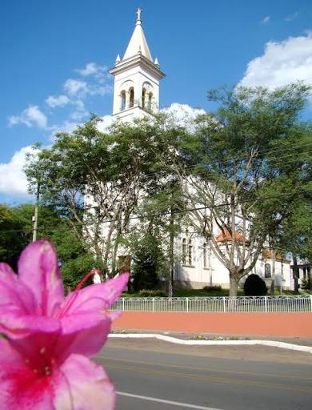
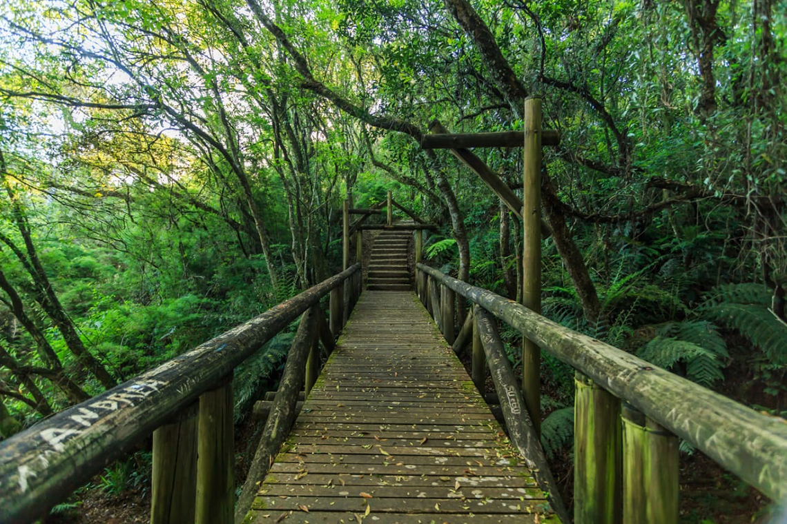

Sobre
Balsa Nova é uma cidade do interior do Paraná conhecida por suas paisagens naturais, tranquilidade e proximidade com Curitiba. É um local que mistura natureza, história e um estilo de vida mais calmo.

1️⃣ Origem do nome
O nome “Balsa Nova” vem de uma antiga travessia feita por balsas na região. Antes da construção de pontes, essas estruturas eram essenciais para atravessar rios, permitindo o transporte de pessoas, animais e mercadorias. Com o tempo, uma nova balsa foi criada, mais eficiente, e o nome acabou sendo adotado pela cidade.

2️⃣ Localização estratégica
A cidade está localizada a cerca de 50 km de Curitiba, o que a torna um ponto estratégico. Isso permite fácil acesso à capital enquanto mantém um ambiente mais tranquilo, sendo ideal para quem quer equilíbrio entre cidade e interior.
.jpeg)
3️⃣ Natureza e paisagens
Balsa Nova é cercada por áreas verdes, rios e paisagens naturais pouco exploradas. Isso proporciona contato direto com a natureza e atividades como trilhas, além de oferecer ar puro e qualidade de vida.
.jpeg)
4️⃣ Região histórica
A região está ligada a caminhos históricos importantes do Paraná, utilizados desde o período colonial. Essas rotas ajudaram no desenvolvimento econômico e cultural da área.
.jpeg)
5️⃣ Estilo de vida tranquilo
Diferente de grandes cidades, Balsa Nova oferece um ritmo mais calmo e menos estressante, sendo ideal para quem busca paz e qualidade de vida.

6️⃣ Economia agrícola
A economia local é baseada principalmente na agricultura, com produção rural e propriedades familiares que mantêm tradições vivas.

7️⃣ Crescimento recente
Nos últimos anos, a cidade vem crescendo com novos moradores e melhorias na infraestrutura, mantendo seu charme interiorano.